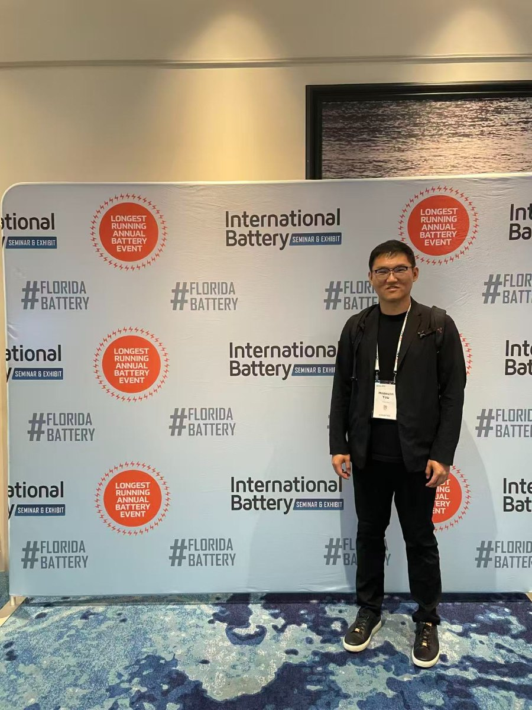

Bridging R&D and the production line
I'm a mechanical and cell design engineer with seven years spanning battery R&D, mechanical design and high-volume manufacturing for lithium-metal, lithium-sulfur and LFP systems. My work sits where electrochemistry, mechanical design and production meet. I care as much about a cell's failure modes as about the process window that keeps yield stable at scale.
At Tesla I own LFP cell and module assembly for 24/7 production: I commission and ramp new stations with domestic and international OEM suppliers, cutting cycle time 15%, lifting rolled yield 10%, and holding capability above Cpk 1.67 through in-line SPC and structured root-cause work. Before Tesla I led cell-level mechanical design and manufacturing scale-up at Lyten, including a 100× increase in lithium-metal foil throughput. I'm most energized where a materials-level decision and a manufacturing constraint collide.
Capability
Patents
Three lithium-sulfur patents, all assigned to Lyten, Inc.
WO2024118412A1 · 2024
Hybrid gel polymer electrolytes
Hybrid gel polymer electrolytes and catholytes for lithium-sulfur batteries. Shan, J., You, H., et al.
WO2025085743A1 · 2025
Lithium-sulfur batteries
Meng, Y., You, H., et al.
WO2024259126A3 · 2024
Lithium-alloy anodes
Lithium-alloy anodes for lithium-sulfur batteries. Bugga, R., You, H., et al.
Publications
Five papers and conference presentations. Full list on Google Scholar.